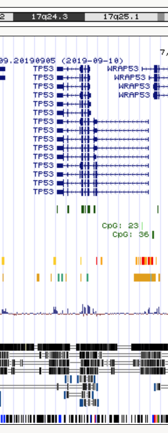
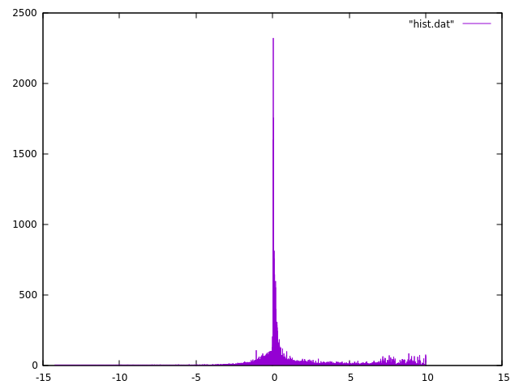
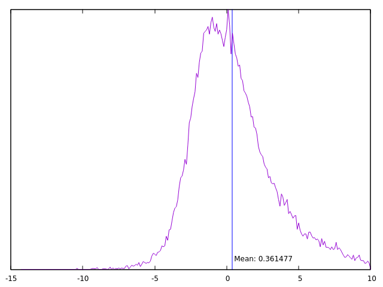

Statistics on very large columns of values
Problem formulated an presented at the workshop by Voichita Marinescu, Department of Medical Biochemistry and Microbiology, Comparative genetics and functional genomics
When analyzing variables with large numbers of values, one needs to generate descriptive statistics (e.g. mean, median, std, quartiles, etc.) in order to set thresholds for further analyses. This could easily be done in R if the vector or values could be loaded. But sometimes the number of values is prohibitively large for R, and even pandas in Python may fail.
One such example is provided by the conservation scores for each nucleotide position of the MultiZ alignment of 99 vertebrate genomes against the human genome (UCSC 100way alignment). You visualized the phylogenetic tree for the species in this alignment in the previous exercise. Using the program phyloP (phylogenetic P-values) from the PHAST package, a conservation score is computed for each position in the human genome resulting in 3 billion values. To identify the most conserved positions (the ones with the highest phyloP scores) one would need to generate descriptive statistics for the score distribution and set thresholds accordingly.
We want to output the total number of values (count) and the mean, median, std, min, max, 10%, 25%, 75%, 90% of the score values, and also to plot the histogram.
Input
The complete file in bigwig format is 5.5GB in size.
- Do not download file the file
hg38.phastCons100way.bwfrom http://hgdownload.soe.ucsc.edu/goldenPath/hg38/phastCons100way/ - The bigwig format can be converted to wig format using bigWigToWig https://www.encodeproject.org/software/bigwigtowig/
- The wig format can be converted to bed format using wig2bed https://bedops.readthedocs.io/en/latest/content/reference/file-management/conversion/wig2bed.html
For a short presentation of the main bioinformatics file formats see the UCSC Data File Formats page.
In this exercise we will not work with complete file, but with smaller files downloaded using the UCSC Table Browser.
We will use a 400kb interval on chr17:7,400,001-7,800,000

The Table Browser allows downloads for up to 100kb.
- chr17_7.400.001-7.500.000.data
- chr17_7.500.001-7.600.000.data
- chr17_7.600.001-7.700.000.data
- chr17_7.700.001-7.800.000.data
 !!! WARNING !!! WARNING !!! WARNING !!!
!!! WARNING !!! WARNING !!! WARNING !!!
The files are in Windows/DOS ASCII text, with CRLF line terminators format which makes awk to misbehave. Check your files and convert them to UNIX format if necessary.
# check the format
$ file filename
filename: ASCII text, with CRLF line terminators
# Convert to unix format
$ dos2unix filename
dos2unix: converting file filename to Unix format ...
# check again
$ file filename
filename: ASCII text
The phyloP scores are in the second column.
Compute statistics
The memory problem for large data could be solved in Python with Dask. Since the analysis uses approximate methods for the quartile and other percentiles, you might need to resort to percentiles_method="tdigest" which improves the final results.
Here we will rely on the specifics of the data to implement an easy trick in awk (you can do it in any another language as well). We will calculate a discrete histogram over the values in the second column in the files. This generates too many elements, but looking into the data we can see that resolution is up to the 3 decimal points... So we will reduce the numbers (which in this case is even unnecessary but might be become a potential problem).
Step 1
$ ./01.histogram.awk *.data.txt | sort -g -k 1 > hist.dat
01.histogram.awk
1 2 3 4 5 6 | |
Step 2
Let's see what we got.
plot "hist.dat" with line

You can use other programs to make the histograms in intervals - here we can use gnuplot as example:
1 2 3 4 5 6 7 8 9 10 11 12 13 14 | |

Step 3
Let's find some relevant numbers from hist.dat.
$ head -n 1 hist.dat | awk '{print "min:\t"$1}'
min: -14.247
$ tail -n 1 hist.dat | awk '{print "max:\t"$1}'
max: 10.003
This was easy. How about the real numbers we are after?
We need ianother program - again you can do it in other languages as well.
$ ./stats.awk hist.dat
count: 398516
mean: 0.361477
10% :-0.973866
25% :-0.326732
50% :0.127701
75% :0.53989
90% :1.72925
stats.awk
1 2 3 4 5 6 7 8 9 10 11 12 13 14 15 16 17 18 19 20 21 22 23 24 25 26 27 28 29 30 31 32 33 34 | |